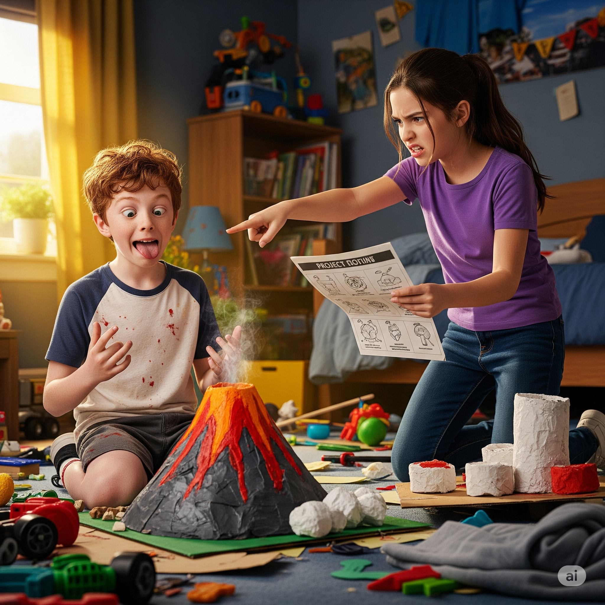
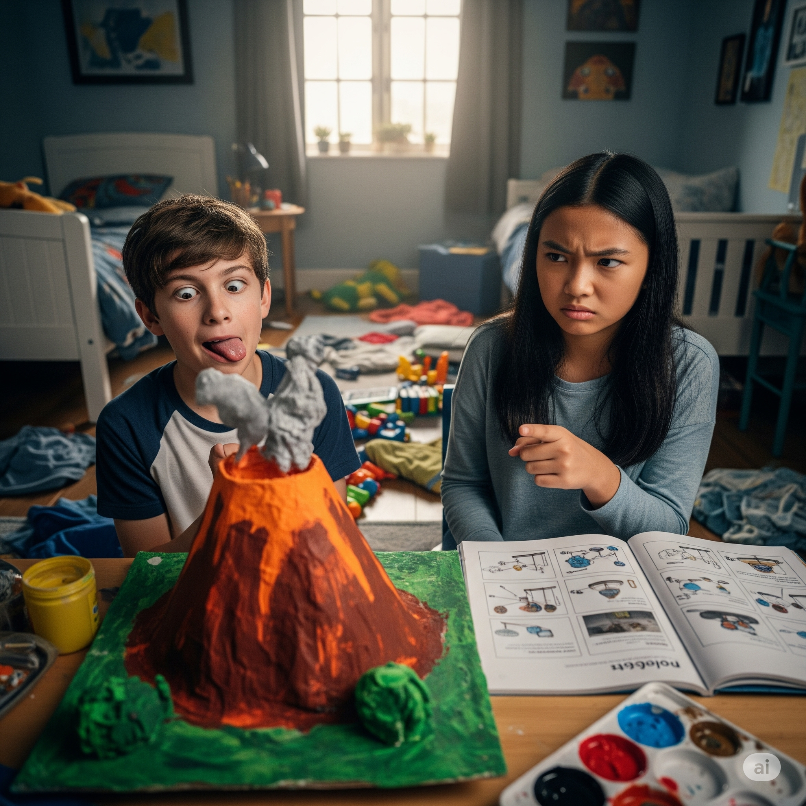
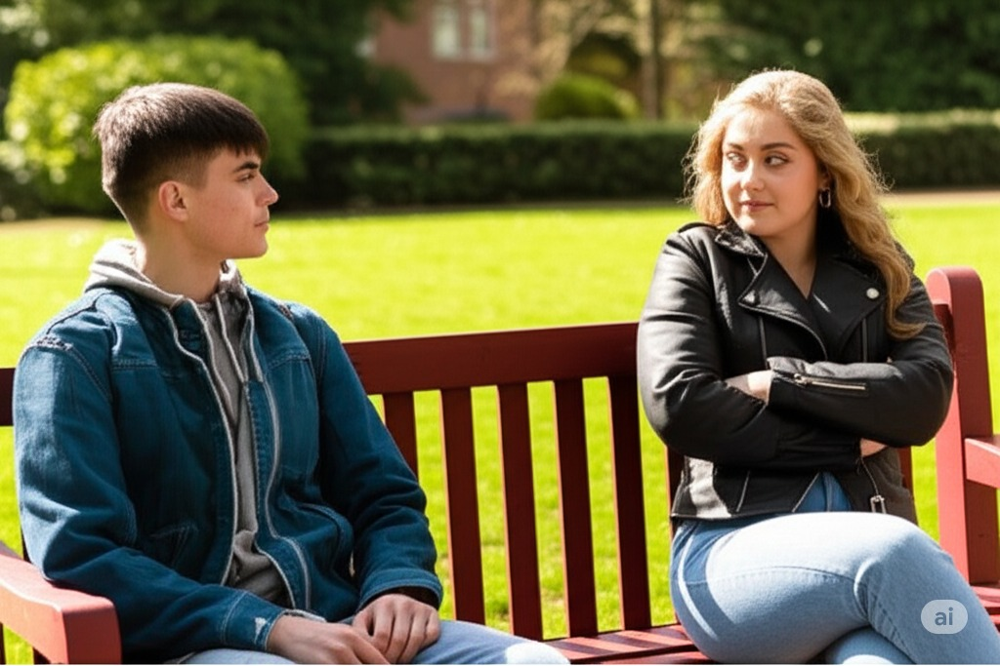
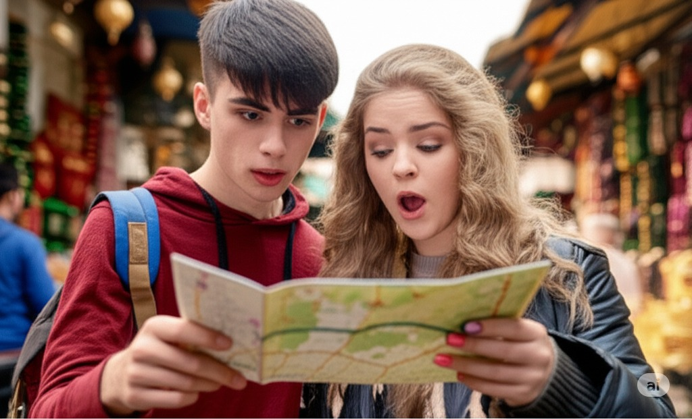
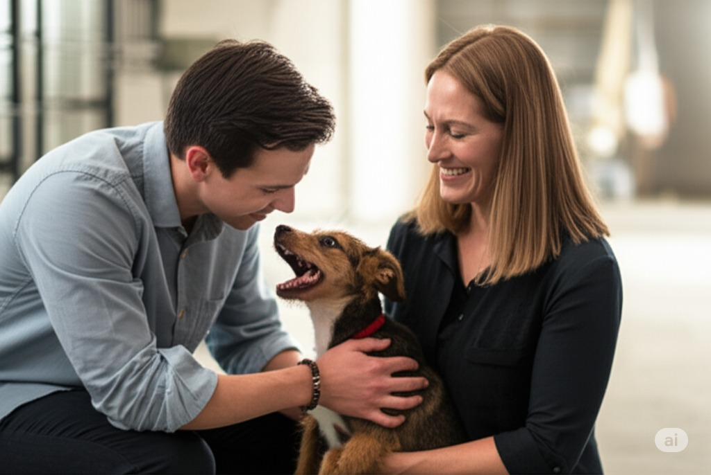
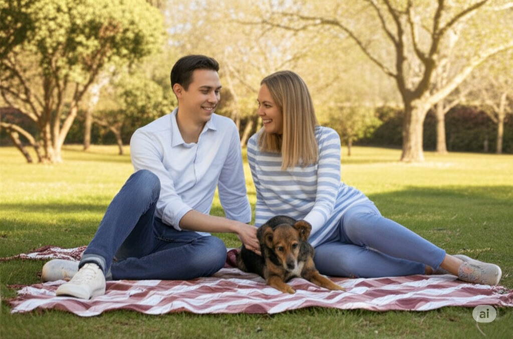

Illuminate Zone
Leo and Sofia's Friendship Journey
Navigate scene by scene, listen to the dialogue, and mark each scene when you understand it.

At age 7, a friendly Leo meets a quiet Sofia on the first day of school.
"Hi. I'm Leo. You can use my blue crayon."

At 12, Leo is being funny, but Sofia is very serious about their science project.
"Leo, stop. This is serious. We need to work."
At 16, smart and kind Sofia helps a struggling Leo study.
"Wow, Sofia. You are very smart. Thank you."
At 19, an argument makes Sofia look unfriendly for a moment.
"Sofia... I am sorry. Please, don't be like this."

The next day, Sofia is nice and ready to talk.
"It's okay, Leo. You are my friend. Let's talk."

At 25, the young adults take an interesting trip.
"This place is so interesting! Where to next?"
At 28, a slim and pleasant Sofia advises a nervous Leo.
"You are smart and kind. Just be you. You will be great."
Leo gets the job! He looks handsome, and Sofia looks beautiful.
"To my best friend. Thank you, Sofia."

At 32, they adopt a very cute dog.
"Oh, Leo! He is so cute! We have to take him."

At 40, the good-looking friends are still happy together.
"Forty years old. And you are still my best friend."